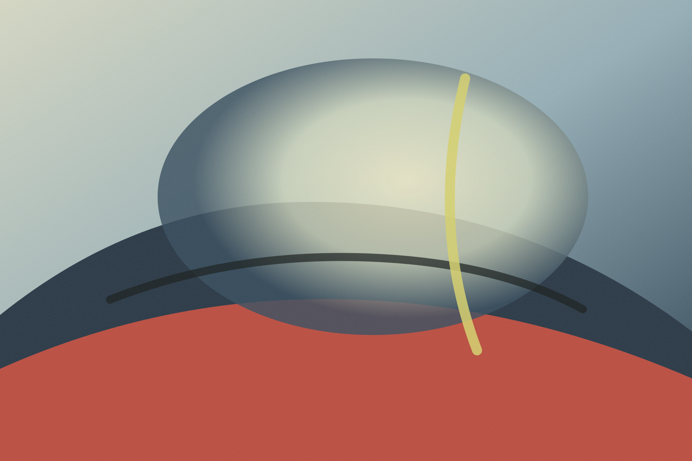
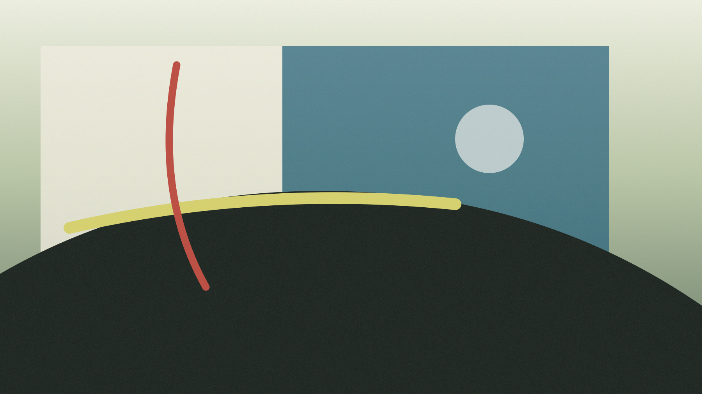
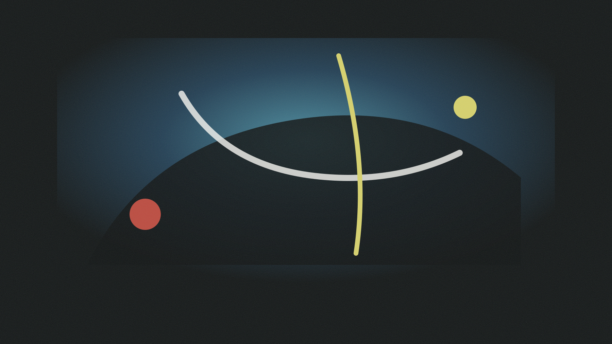
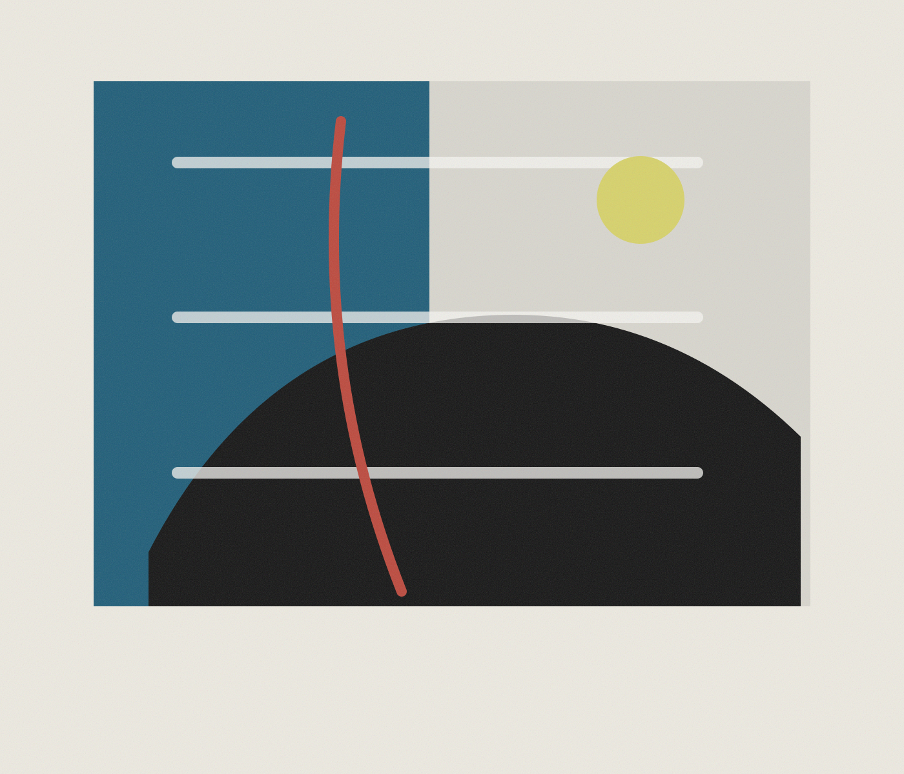

Portfolio / archive / studio notes
Images for unstable interiors, artificial weather, and remembered rooms.

Selected works from an evolving personal practice.
Digital image, installation sketch, sound notation, and speculative environments.
Based online at getzeekey.com.
Current focus
Horizon Rooms
2026 - ongoing
A sequence of quiet digital studies that treat the screen as a room: a place where light enters, memory changes color, and surfaces behave like weather.
Replace this text with your own project statement. This layout is designed for a serious artist site: generous images first, then restrained captions, process notes, and context.


Projects
01 Horizon Rooms digital studies / 2026 02 Machine Weather installation notes / 2026 03 House of Near Light image sequence / 2025 04 Field Index archive / ongoing
Process
Notes can sit beside images rather than above them. Use this space for materials, field research, software, sketches, exhibition history, sound, or installation dimensions.
The page favors calm reading and slow looking: small navigation, unframed image fields, simple rules, and text that behaves like documentation rather than promotion.
About
getzeekey is a personal art archive for image experiments and project documentation.
Replace this with a short artist biography. Mention your medium, interests, location, exhibitions, education, or the ideas your work returns to.
This template is intentionally spare so your own images can carry the site. Add more project pages later by duplicating sections or creating separate HTML files.